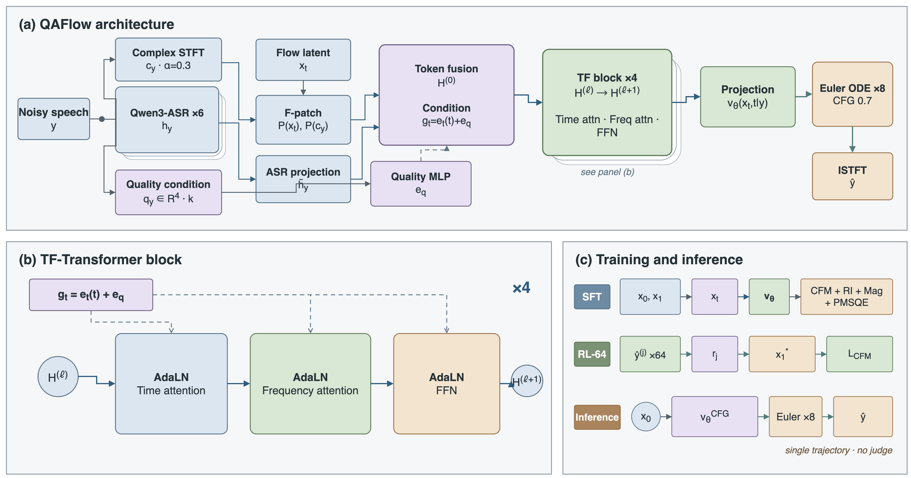

QAFlow: Quality-Aware Flow Matching for Speech Enhancement
Abstract
Conditional generative speech enhancement commonly treats the noisy observation as its principal condition, requiring the model to infer speech content and degradation severity from the same input. Task-relevant complementary conditions can reduce this ambiguity and provide a more stable basis for estimating the transport field. QAFlow addresses this problem with a quality-aware conditional flow-matching framework conditioned on non-intrusive estimates of input quality. It combines a trainable ASR-initialized acoustic encoder with flow matching in a power-compressed complex STFT domain, avoiding a separate latent VAE or neural vocoder. Supervised training uses spectral and perceptually weighted objectives, followed by an offline stage guided by a non-intrusive perceptual judge. QAFlow achieves the strongest overall quality among the compared systems while retaining efficient eight-step inference.

Method
QAFlow represents each noisy waveform with an explicit quality condition, ASR-initialized acoustic features, and a compressed complex spectrum. These signals condition a time-frequency Transformer whose velocity field restores the target spectrum through a short flow trajectory. Perceptually guided post-training then distills preferred outputs into the same model without changing its inference path.
